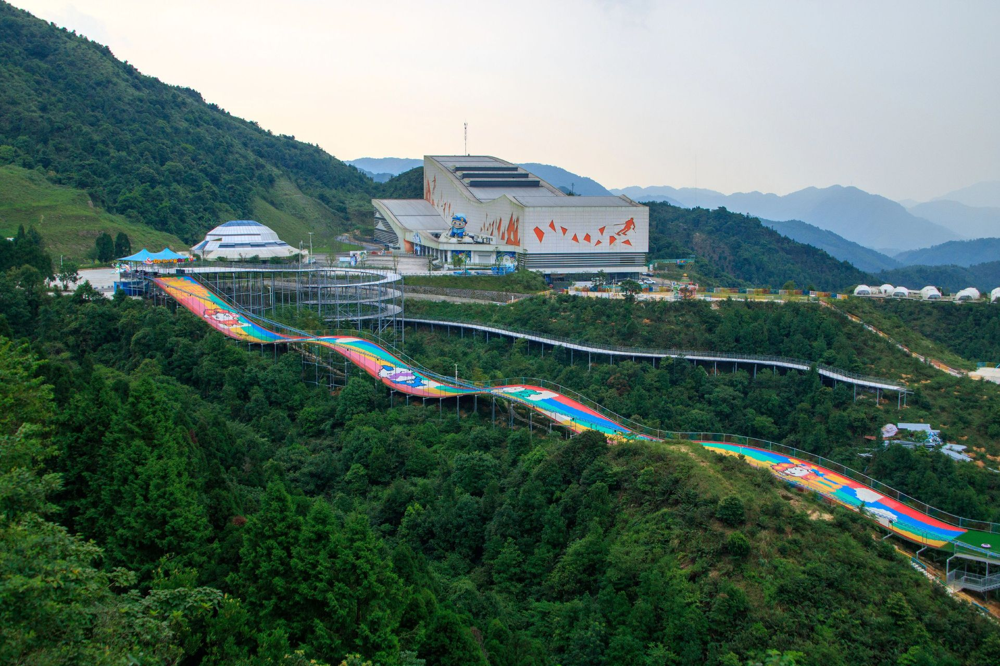
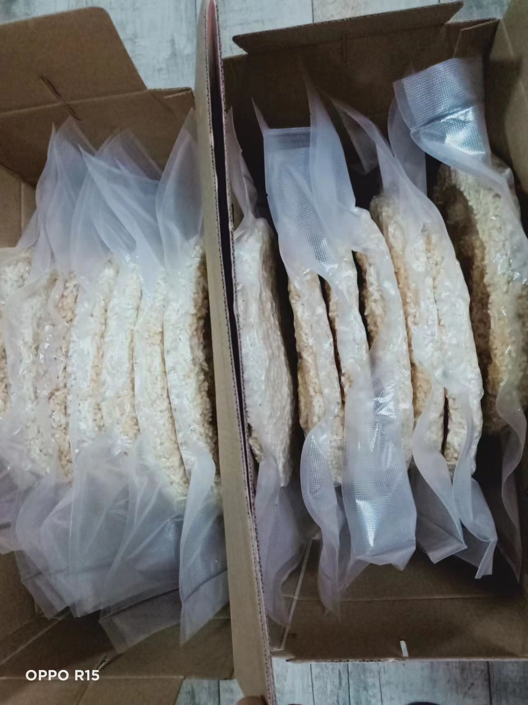
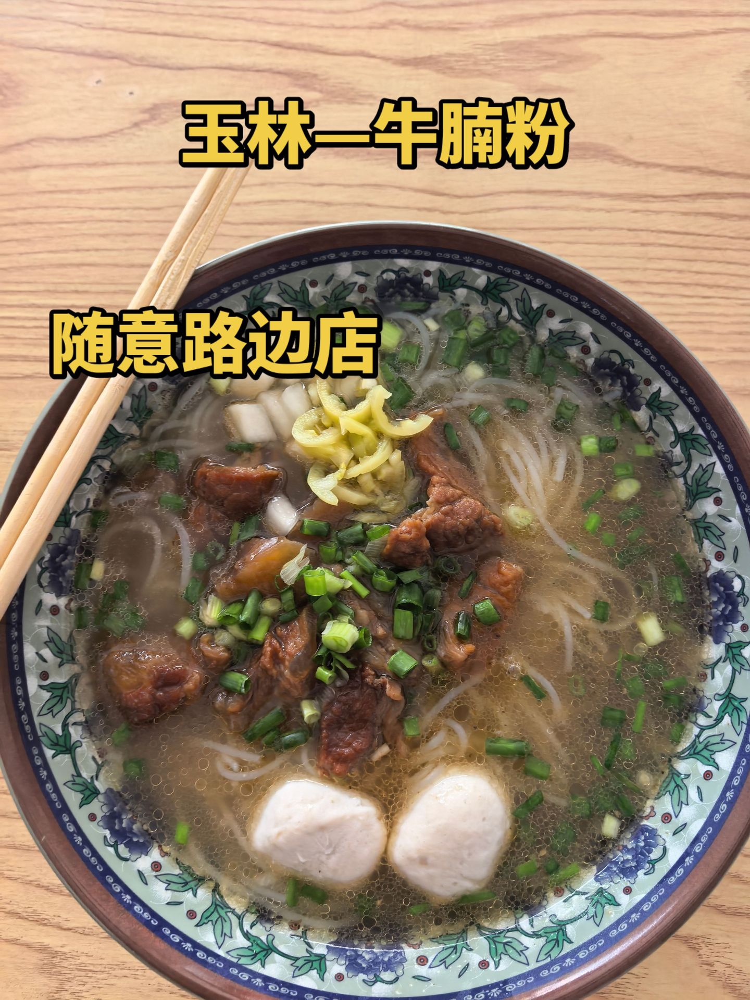
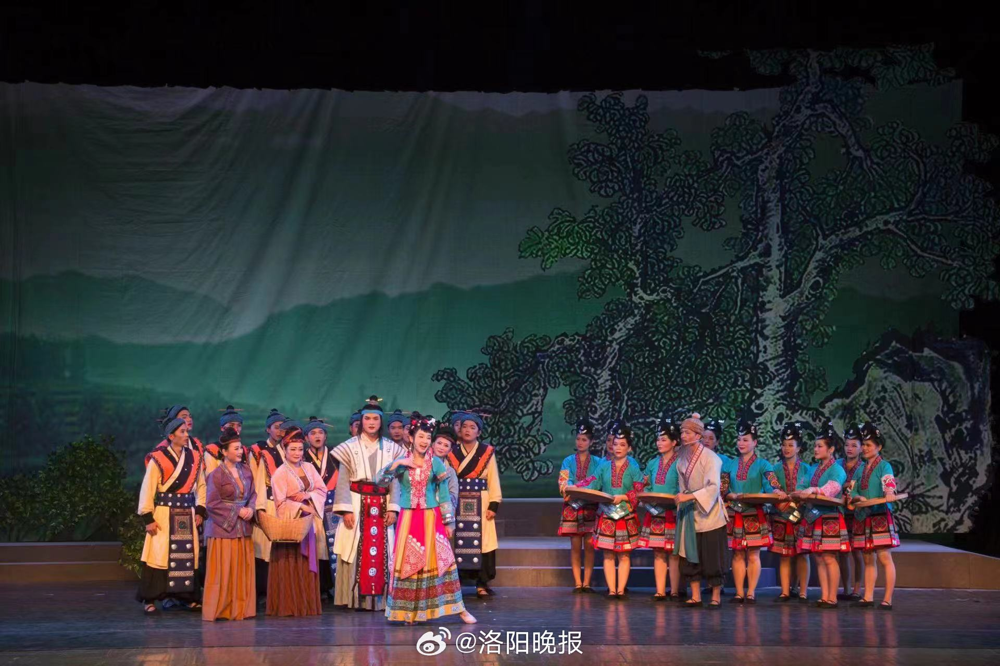

点击看大图
点击看大图

广 西 · 玉 林
山水玉林 · 岭南美玉
一城岭南美玉，千年古州风华。
山环水抱之间，藏着最抚凡人心的烟火味道。
NATURE · 山水自然
山环水抱，造化钟灵
大容山的林海、都峤山的丹霞、田园的稻浪、城中宫阙的飞檐——玉林的山水平畴，一步一景。

HERITAGE · 人文古迹
千年古州，匠心独运
一座不用铁钉的木构奇楼，一座唐风重檐的古城，一座聚族而居的客家围堡——木石之间皆是岁月。


CUISINE · 特色美食
一城烟火，风味岭南
清晨一碗牛腩粉，午后一片白散，年节一碟牛巴一只鸭。玉林的味道，藏在市井摊头与家的灶台上。
 点击看大图
点击看大图

点击看大图
点击看大图 点击看大图
点击看大图
INTANGIBLE HERITAGE · 民俗非遗
乡音未改，古艺犹新
唢呐一响，八音穿云；茶山起调，采茶入戏；山歌一句，木偶一台——这些都是玉林人世代相传的生活底色。
 点击看大图
点击看大图

点击看大图
点击看大图
 点击看大图
点击看大图
VIDEO GALLERY · 视频展映
光影玉林，动起来的家乡
从山水到市井、从技艺到舞台，15 段影像带你看见会呼吸的玉林。点击任意封面即可播放。
云端草甸 · 露营大容山
风车、草甸与日出云海，帐篷就搭在千米山脊之上。
素材来源：抖音 ↗仙境云海 · 都峤山
丹霞赤壁在云雾里起落，一步风景，一步传说。
素材来源：抖音 ↗水街黄昏 · 五彩田园
夕阳落在稻田与水街之间，田园的颜色一层叠一层。
素材来源：抖音 ↗天上宫阙 · 云天宫
走进这座宫殿群，看雕刻与飞檐如何堆出一座城。
素材来源：抖音 ↗四柱悬空 · 真武阁
看这座明代木构如何以杠杆之力悬柱千年。
素材来源：抖音 ↗唐风夜色 · 容州古城
贵妃故里的传说，藏在古城的每一盏灯笼里。
素材来源：抖音 ↗百年围堡 · 客家围屋
两百余年风雨，一座围屋围住的是一个家族。
素材来源：抖音 ↗甘韧咸香 · 玉林牛巴
一道牛巴从选肉到入味，要经过多少耐心。
素材来源：抖音 ↗一碗乡愁 · 牛腩粉
记住一座城的方式，常常是从一碗粉开始的。
素材来源：抖音 ↗年的符号 · 玉林白糤
压模、晾晒、入油锅，一朵米花炸开整个新年。
素材来源：抖音 ↗城市名片 · 福绵鸭
一只白切鸭，蘸的是酱，品的是三十年烟火。
素材来源：抖音 ↗八音合鸣 · 玉林乡音
唢呐一出声，整条街都跟着热闹起来。
素材来源：抖音 ↗茶山有戏 · 桂南采茶戏
扇花翻飞，矮步生风，一台小戏唱尽人间喜乐。
素材来源：抖音 ↗三月三 · 客家山歌
原创山歌起调，唱的是客家日子里长出的人间欢喜。
素材来源：抖音 ↗指上春秋 · 玉林木偶戏
提线之间，木偶也有了悲喜表情。
素材来源：抖音 ↗ABOUT YULIN · 关于玉林
岭南美玉，我的家乡
玉林，地处广西东南部，古称郁林。西汉元鼎六年（公元前111年）设郁林郡，至今已有两千一百余年的州郡历史，世称“千年古州、岭南都会”。
全市总面积约1.28万平方公里，辖玉州区、福绵区、北流市、容县、陆川县、博白县、兴业县等县（市、区）及玉东新区。这里是广西第二人口大市，也是广西最大、全国著名的侨乡——220多万海外华侨及港澳台同胞的根，在这片丘陵与盆地之间。
大容山层峦叠翠，都峤山丹霞赤壁映日，真武阁以四柱悬空写下中国木构建筑的传奇；而真正让人念想的，往往还是清晨那碗热气腾腾的牛腩粉，和年关炸开的白散香。山水养人，烟火留客——这便是我生长的玉林。
数据出处：玉林市人民政府门户网站《玉林市概况》《玉林旅游导图》；人口数据引自百科词条所载统计公报，详见下方来源说明。
2100+ 年州郡建置历史西汉元鼎六年（公元前111年）置郁林郡
580.42万人常住人口2024年末数据；户籍人口约742万
44家国家 A 级旅游景区其中 4A 级景区 16 家（截至2024年7月）
220万+海外华侨及港澳台同胞广西第一侨乡，全国著名侨乡
素材来源与数据出处（点击展开）
- 大容山 —— 图片 来源｜视频 来源
- 都峤山 —— 图片 来源｜视频 来源
- 五彩田园 —— 图片 来源一、来源二｜视频 来源
- 云天文化城 —— 图片 来源｜视频 来源
- 真武阁 —— 图片 来源｜视频 来源
- 容州古城 —— 图片 来源｜视频 来源
- 客家围屋 —— 图片 来源｜视频 来源
- 玉林牛巴 —— 图片 来源｜视频 来源
- 牛腩粉 —— 图片 来源一、来源二、来源三｜视频 来源
- 玉林白散 —— 图片 来源｜视频 来源
- 福绵鸭 —— 图片 来源｜视频 来源
- 玉林八音 —— 图片 来源｜视频 来源
- 玉林木偶戏 —— 图片 来源｜视频 来源
- 桂南采茶戏 —— 视频 来源
- 客家山歌 —— 视频 来源
完整溯源清单另见本站 资料/图像溯源.docx。所有图片与视频素材均采集自抖音公开短视频，版权归原作者所有，本页仅用于《人工智能导论》课程实践展示，不作商业用途。
城市数据参考：玉林市人民政府门户网站
《玉林市概况》、
《玉林旅游导图》。